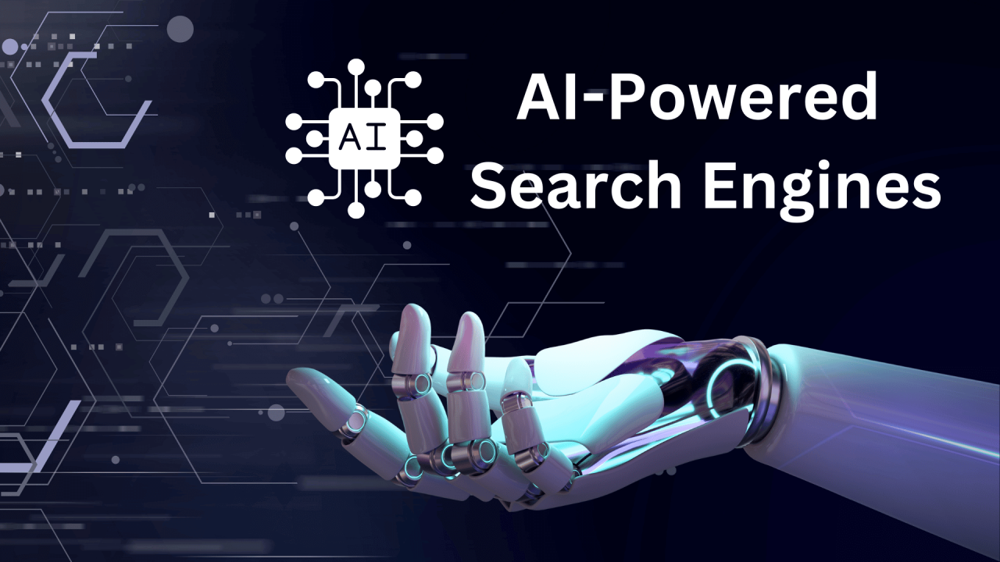

How to Use Artificial Intelligence in MarketingThis tutorial will discuss the use of artificial Intelligence in Marketing and how marketing companies can make effective use of it. Let's get started. Artificial Intelligence is a growing trend within the top technology companies. As technology and imagination merge, it is finally making strides. The concept of virtual reality is not only being adopted by technology companies but also by the general public. Artificial Intelligence has become the centre of modern business. The insight-driven eCommerce platforms have led to the creation of IoT (Internet of Things). Artificial Intelligence is set to have a long-lasting impact on marketing. Artificial Intelligence, for example, helps digital marketing teams bridge the gap between data available and execution. They can bridge the gap between customers and businesses. Marketers use Artificial Intelligence to unlock unimaginable possibilities. These opportunities include improving the digital market, which will result in better performance and profits. This will also increase the data-driven focus. Marketing brands can also use AI to make incredible gains by better understanding their customer base. We must have a solid understanding of Artificial Intelligence to be a successful marketer in today's marketplace. Marketers can now use AI Search Engines.Even before artificial intelligence, search engines have advanced a lot. Search engines can be used to find the exact names that we are searching for. Artificial intelligence has made it possible to search for specific names more accurately and provide more relevant results. Our company brand can use AI-enabled search engines to help customers find the product or service they are looking for. It is easy to do, and it will work even if the customer typed a confusing term. Consider a customer who wants to buy a product from Amazon. The search engine will ask the customer to enter the general term. Amazon's AI-enabled search engine will correct any typos in order to deliver the most relevant results. We can also use the advanced search feature to perform more specific searches. Marketers can use Artificial Intelligence for Market Forecasting.It is essential to provide a positive customer experience as a marketer. The recent Google algorithm changes have made customer experience a hot topic. Marketers must adapt to the new algorithm in order to exceed customers' expectations. Artificial intelligence allows marketers to predict the market structure better (especially demand). This gives them the information they need to nurture the prospect or move on to the next opportunity. One example of this is a marketer who deals with inventory. An inventory marketer must be able to accurately predict the inventory that will be sold and when to increase our marketing efforts in order to sell it. In anticipation of higher sales, we can use the already available inventory. Marketers can use artificial intelligence to analyse customer conversations to determine successes and failures. This data will allow them to decide if they should continue working with the prospect. Marketers use AI for Programming Advertising.
Programmatic advertising involves buying and selling ads automatically. Programmatic advertising allows advertisers and publishers to connect to ad inventory to exchange ads. This process is made easier by artificial intelligence, especially for marketers. It uses algorithms to analyse customer behaviour and optimize it for the most relevant results. Programmatic advertising is a method for marketing brands to reach customers that have a high probability of being convinced. Marketers must target customers looking for our product or service and convince them to buy. Cookies provide insight into artificial intelligence that can be tailored to the campaign. Marketers can target buyers who are hesitant by using artificial intelligence and programmatic marketing. This is achieved by analysing the trends and identifying preferred targeting options. Some trends provide a better picture of customer behaviour. These include matching subscriber data and finding other data. These trends enable marketers to create duplicate audiences or segments that are appropriate. Through Content creation.The main benefit of artificial intelligence, particularly for marketers, is that AI systems are able to find the most relevant, valuable content to our intended viewers. The data used to make the content is sourced from various data sets. This is advantageous for marketers since it is a part of the content strategy of their marketing. AI systems can produce appropriate, highly targeted, and well-curated content relevant to our target viewers. Marketers also employ artificial intelligence to develop marketing strategies based on data collected by an AI system. Suppose the insights that help create content for your customers are utilized in conjunction with your audience. In that case, we may also utilize the information to devise an approach that we can employ to inform your customers. It is also possible to use this method to collect information on potential customers. As time passes, prospects are more likely to purchase or sign up for the item or service because they are seeking the exact deal. Artificial Intelligence provides Chatbots.In Digital marketing, chatbots are considered an important element, particularly in modern-day digital marketing. Chatbots enable marketers to maintain a high retention capability. Chatbots with AI capabilities provide responses to customers in the form of questions. Companies and companies that have a staff dedicated to customer service may struggle in dealing with thousands of clients. That's why chatbots are required to meet the demands of customers (mainly small ones). Chatbots are able to engage customers, which frees up a customer service person to address the most important issues and questions. Chatbots are also able to be utilized anytime, which is much more efficient than having humans serving as customer service representatives 24/7. Artificial Intelligence in Marketing for Dynamic PricingIt's an aspect of knowing the future trends in the market; however, it's a different factor to employ an effective strategy that is efficient and precise. Dynamic pricing is essential for marketers because it allows you to maximize sales that have the highest demand. We will also know when we should offer discounts on sales. Utilizing artificial intelligence as a marketing tool lets us stay up to date on the invisible shifts on a vast scale. AI-enabled technology provides us with precise predictions that keep us up to date with the changing trends in pricing. Artificial Intelligence provides the Market with good Advertisement Performance.The only way to determine if our marketing campaign is performing well is to use analytics for a marketer. Analytics can provide us with insight into the things that are effective and what's not working with our marketing campaign. Machine learning and artificial intelligence offer detailed analysis and insights into the success of our advertising and unsuccessful ones. This can help us in making the best choice about where to focus our efforts regarding our advertising campaign. Artificial intelligence can tell us the number of clicks an advertisement has. It also shows the country or the region that the clicks originated from, as well as the platforms the clicks were made on, in addition to other important data. This information will aid with our campaign to lead to a better ROI. It is also possible to utilize these insights to make forecasts for the future, so we have a better view of the trend overall. These insights will assist in reorganizing the strategies you employ to reach our goals in the future. It is also possible to increase our conversion rates as time passes. Conclusion.Artificial Intelligence is an effective instrument for marketers and marketing companies. With AI-enhanced advertising, marketers are able to rely on artificial intelligence in determining the efficacy of their marketing strategies. We'll also know the best places to invest our money to provide the best return on the investment. Artificial Intelligence also improves our customer's experience, providing more chances to engage with customers. Whatever the field Artificial Intelligence is beneficial to all modern efforts of marketing professionals. It streamlines the process of marketing and offers affordable, precise, and efficient solutions. Feedback
Next TopicArtificial Intelligence in Business
|